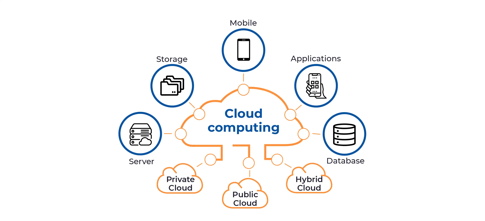

Educational in Cloud Computing

Introduction to Cloud Computing
Cloud computing is a model for delivering on-demand computing resources over the internet. It allows users to access a shared pool of configurable computing resources, such as networks, servers, storage, applications, and services. This technology has revolutionized the way businesses and individuals store, process, and manage data, providing scalability, flexibility, and cost-efficiency.
Benefits of Cloud Computing in Education
- Scalability: Cloud computing enables educational institutions to scale their resources up or down based on demand, ensuring optimal performance and cost savings.
- Cost Savings: By utilizing cloud services, educational institutions can reduce infrastructure costs associated with maintaining physical servers and data centers.
- Collaboration: Cloud-based tools and platforms facilitate collaboration among students, teachers, and researchers, allowing for seamless information sharing and teamwork.
- Accessibility: Cloud computing enables students and teachers to access educational resources and applications anytime, anywhere, using various devices.
- Data Security: Cloud service providers implement robust security measures to protect sensitive data, often exceeding the security capabilities of individual institutions.
Use Cases of Cloud Computing in Education
Cloud computing finds applications in various educational scenarios, including:
- Online Learning Platforms: Cloud-based platforms provide a scalable and accessible environment for hosting online courses, virtual classrooms, and interactive learning materials.
- Data Storage and Backup: Cloud storage services allow educational institutions to store and back up large amounts of data securely, reducing the risk of data loss.
- Collaborative Research: Cloud-based research platforms enable researchers from different institutions to collaborate on projects, share data, and run complex simulations.
- Virtual Labs: Cloud infrastructure can be used to host virtual lab environments, providing students with hands-on experience in various scientific disciplines.
- Big Data Analysis: Cloud computing offers powerful computational resources for processing and analyzing vast amounts of educational data, leading to valuable insights.
Challenges and Considerations
While cloud computing offers significant advantages, educational institutions must also address several challenges and considerations:
- Data Privacy: Institutions must ensure compliance with data protection regulations and implement appropriate security measures to safeguard sensitive student and staff information.
- Vendor Lock-In: Institutions should carefully evaluate cloud service providers to avoid vendor lock-in and ensure seamless data portability.
- Internet Connectivity: Reliance on cloud services necessitates reliable and high-speed internet connectivity to ensure uninterrupted access to educational resources.
- Training and Support: Institutions need to provide adequate training and support to students, teachers, and staff members to effectively utilize cloud-based tools and platforms.
- Cost Management: While cloud computing can lead to cost savings, institutions must carefully monitor and manage their cloud usage to avoid unexpected expenses.
Conclusion
Cloud computing offers numerous benefits for education, including scalability, cost savings, collaboration, accessibility, and data security. By leveraging cloud-based solutions, educational institutions can enhance their teaching and learning experiences, foster innovation, and prepare students for the technology-driven future.